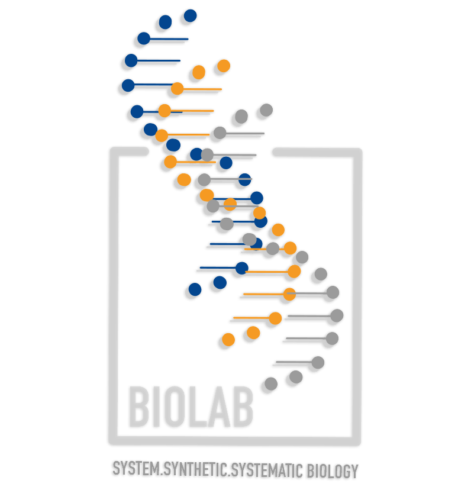

Statistical workshop with R
20 Oct 2023
| Variable | Definition |
|---|---|
| id | A unique sample identifier |
| Gender | Gender (sex) of study participant coded as male or female |
| Age | Age in years at screening of study participant. Note: Subjects 80 years or older were recorded as 80. |
| Race | Reported race of study participant, including non-Hispanic Asian category: Mexican, Hispanic, White, Black, Asian, or Other. Not availale for 2009-10. |
| Education | Educational level of study participant Reported for participants aged 20 years or older. One of 8thGrade, 9-11thGrade, HighSchool, SomeCollege, or CollegeGrad. |
| MaritalStatus | Marital status of study participant. Reported for participants aged 20 years or older. One of Married, Widowed, Divorced, Separated, NeverMarried, or LivePartner (living with partner). |
| RelationshipStatus | Simplification of MaritalStatus, coded as Committed if MaritalStatus is Married or LivePartner, and Single otherwise. |
| Insured | Indicates whether the individual is covered by health insurance. |
| Income | Numerical version of HHIncome derived from the middle income in each category |
| Poverty | A ratio of family income to poverty guidelines. Smaller numbers indicate more poverty |
| HomeRooms | How many rooms are in home of study participant (counting kitchen but not bathroom). 13 rooms = 13 or more rooms. |
| HomeOwn | One of Home, Rent, or Other indicating whether the home of study participant or someone in their family is owned, rented or occupied by some other arrangement. |
| Work | Indicates whether the individual is current working or not. |
| Weight | Weight in kg |
| Height | Standing height in cm. Reported for participants aged 2 years or older. |
| BMI | Body mass index (weight/height2 in kg/m2). Reported for participants aged 2 years or older. |
| Pulse | 60 second pulse rate |
| BPSys | Combined systolic blood pressure reading, following the procedure outlined for BPXSAR. |
| BPDia | Combined diastolic blood pressure reading, following the procedure outlined for BPXDAR. |
| Testosterone | Testerone total (ng/dL). Reported for participants aged 6 years or older. Not available for 2009-2010. |
| HDLChol | Direct HDL cholesterol in mmol/L. Reported for participants aged 6 years or older. |
| TotChol | Total HDL cholesterol in mmol/L. Reported for participants aged 6 years or older. |
| Diabetes | Study participant told by a doctor or health professional that they have diabetes. Reported for participants aged 1 year or older as Yes or No. |
| DiabetesAge | Age of study participant when first told they had diabetes. Reported for participants aged 1 year or older. |
| nPregnancies | How many times participant has been pregnant. Reported for female participants aged 20 years or older. |
| nBabies | How many of participants deliveries resulted in live births. Reported for female participants aged 20 years or older. |
| SleepHrsNight | Self-reported number of hours study participant usually gets at night on weekdays or workdays. Reported for participants aged 16 years and older. |
| PhysActive | Participant does moderate or vigorous-intensity sports, fitness or recreational activities (Yes or No). Reported for participants 12 years or older. |
| PhysActiveDays | Number of days in a typical week that participant does moderate or vigorous-intensity activity. Reported for participants 12 years or older. |
| AlcoholDay | Average number of drinks consumed on days that participant drank alcoholic beverages. Reported for participants aged 18 years or older. |
| AlcoholYear | Estimated number of days over the past year that participant drank alcoholic beverages. Reported for participants aged 18 years or older. |
| SmokingStatus | Smoking status: Current Former or Never. |
# A tibble: 5,000 × 32
id Gender Age Race Education MaritalStatus RelationshipStatus Insured
<dbl> <chr> <dbl> <chr> <chr> <chr> <chr> <chr>
1 62163 male 14 Asian <NA> <NA> <NA> Yes
2 62172 female 43 Black High Sch… NeverMarried Single Yes
3 62174 male 80 White College … Married Committed Yes
4 62174 male 80 White College … Married Committed Yes
5 62175 male 5 White <NA> <NA> <NA> Yes
6 62176 female 34 White College … Married Committed Yes
7 62178 male 80 White High Sch… Widowed Single Yes
8 62180 male 35 White College … Married Committed Yes
9 62186 female 17 Black <NA> <NA> <NA> Yes
10 62190 female 15 Mexican <NA> <NA> <NA> Yes
# ℹ 4,990 more rows
# ℹ 24 more variables: Income <dbl>, Poverty <dbl>, HomeRooms <dbl>,
# HomeOwn <chr>, Work <chr>, Weight <dbl>, Height <dbl>, BMI <dbl>,
# Pulse <dbl>, BPSys <dbl>, BPDia <dbl>, Testosterone <dbl>, HDLChol <dbl>,
# TotChol <dbl>, Diabetes <chr>, DiabetesAge <dbl>, nPregnancies <dbl>,
# nBabies <dbl>, SleepHrsNight <dbl>, PhysActive <chr>, PhysActiveDays <dbl>,
# AlcoholDay <dbl>, AlcoholYear <dbl>, SmokingStatus <chr> [1] "Asian" "Black" "White" "White" "White" "White"
[7] "White" "White" "Black" "Mexican" "White" "White"
[13] "White" "White" "White" "White" "White" "White"
[19] "White" "Hispanic" "Mexican" "White" "Mexican" "Black"
[25] "White" "White" "White" "White" "Asian" "Mexican"
[31] "White" "White" "White" "White" "White" "Mexican"
[37] "White" "Mexican" "White" "White" "White" "Hispanic"
[43] "White" "White" "White" "White" "White" "Mexican"
[49] "Hispanic" "Black" "White" "Mexican" "Black" "White"
[55] "White" "Black" "Black" "White" "White" "White"
[61] "White" "Other" "Other" "Hispanic" "Black" "Black"
[67] "White" "White" "Black" "Black" "Hispanic" "White"
[73] "White" "Mexican" "White" "Black" "White" "White"
[79] "Black" "Asian" "Hispanic" "White" "White" "White"
[85] "White" "Mexican" "White" "White" "White" "White"
[91] "White" "Other" "White" "White" "White" "White"
[97] "White" "White" "White" "White" "White" "White"
[103] "White" "White" "White" "White" "Hispanic" "Asian"
[109] "Hispanic" "White" "White" "White" "Mexican" "Mexican"
[115] "White" "Hispanic" "White" "White" "White" "White"
[121] "White" "White" "White" "White" "Hispanic" "White"
[127] "White" "White" "White" "White" "White" "White"
[133] "Hispanic" "White" "White" "White" "Mexican" "Mexican"
[139] "White" "Mexican" "Black" "Black" "White" "Hispanic"
[145] "Asian" "White" "White" "White" "White" "White"
[151] "White" "White" "White" "White" "White" "White"
[157] "White" "Hispanic" "White" "White" "White" "Asian"
[163] "White" "Hispanic" "Hispanic" "White" "White" "White"
[169] "Hispanic" "Asian" "Other" "White" "White" "Mexican"
[175] "White" "White" "White" "White" "Hispanic" "Hispanic"
[181] "White" "White" "White" "White" "White" "White"
[187] "White" "Black" "White" "White" "Asian" "Asian"
[193] "Black" "Hispanic" "Mexican" "Asian" "Other" "White"
[199] "White" "White" "White" "White" "White" "Black"
[205] "Black" "Black" "Mexican" "Black" "White" "White"
[211] "White" "White" "White" "White" "White" "White"
[217] "White" "White" "White" "White" "White" "White"
[223] "White" "White" "White" "White" "White" "White"
[229] "White" "White" "White" "White" "Black" "White"
[235] "White" "Other" "White" "White" "White" "White"
[241] "White" "Asian" "Asian" "White" "Black" "White"
[247] "White" "White" "White" "White" "White" "Asian"
[253] "White" "White" "Black" "Black" "Black" "Black"
[259] "Black" "White" "Black" "Mexican" "White" "Mexican"
[265] "White" "Asian" "Asian" "White" "White" "White"
[271] "White" "White" "White" "Asian" "White" "White"
[277] "White" "Black" "Other" "Black" "White" "White"
[283] "White" "Mexican" "Asian" "White" "White" "White"
[289] "White" "White" "Mexican" "White" "White" "White"
[295] "White" "White" "Mexican" "White" "White" "White"
[301] "Black" "Black" "Black" "White" "White" "Hispanic"
[307] "White" "White" "White" "Mexican" "Other" "White"
[313] "White" "White" "White" "White" "Mexican" "Asian"
[319] "Hispanic" "Hispanic" "Hispanic" "Black" "Mexican" "Asian"
[325] "White" "White" "White" "White" "White" "Black"
[331] "Hispanic" "White" "White" "White" "White" "White"
[337] "White" "White" "White" "White" "White" "White"
[343] "White" "Black" "White" "White" "White" "White"
[349] "Black" "White" "White" "Black" "Other" "White"
[355] "White" "White" "White" "White" "Black" "White"
[361] "Black" "White" "White" "White" "White" "White"
[367] "White" "White" "White" "White" "Mexican" "White"
[373] "White" "White" "Black" "Black" "Black" "White"
[379] "White" "White" "White" "White" "White" "White"
[385] "Asian" "White" "White" "White" "White" "Black"
[391] "Hispanic" "White" "White" "Hispanic" "Hispanic" "Black"
[397] "White" "White" "Mexican" "White" "Hispanic" "White"
[403] "White" "White" "White" "White" "White" "White"
[409] "White" "White" "White" "White" "Black" "White"
[415] "White" "White" "Asian" "Asian" "Other" "Other"
[421] "Other" "Other" "Other" "Black" "Black" "Black"
[427] "White" "White" "White" "White" "White" "White"
[433] "White" "White" "White" "White" "Hispanic" "Asian"
[439] "White" "White" "White" "White" "White" "White"
[445] "Black" "White" "White" "White" "Mexican" "Mexican"
[451] "White" "White" "White" "White" "White" "Black"
[457] "White" "Asian" "Other" "White" "White" "White"
[463] "White" "White" "Mexican" "Mexican" "White" "White"
[469] "Hispanic" "Asian" "Asian" "Mexican" "White" "White"
[475] "White" "White" "White" "White" "Asian" "White"
[481] "White" "White" "White" "White" "White" "Black"
[487] "White" "White" "White" "White" "White" "White"
[493] "White" "White" "White" "White" "White" "White"
[499] "White" "White" "White" "White" "White" "White"
[505] "White" "White" "White" "White" "White" "White"
[511] "Hispanic" "Mexican" "Mexican" "White" "White" "White"
[517] "Mexican" "Mexican" "Hispanic" "Black" "White" "Asian"
[523] "Black" "Black" "Asian" "Mexican" "Hispanic" "White"
[529] "White" "White" "Black" "Black" "Black" "White"
[535] "White" "White" "White" "White" "White" "White"
[541] "White" "Asian" "Hispanic" "Hispanic" "Mexican" "Mexican"
[547] "White" "White" "White" "White" "Black" "White"
[553] "White" "White" "White" "White" "White" "White"
[559] "White" "Black" "White" "White" "Black" "Black"
[565] "Black" "White" "White" "Mexican" "White" "Black"
[571] "Black" "White" "White" "Black" "Mexican" "Asian"
[577] "White" "White" "Mexican" "Mexican" "Hispanic" "Asian"
[583] "Asian" "Black" "Asian" "Asian" "Hispanic" "Mexican"
[589] "Mexican" "White" "White" "White" "White" "Other"
[595] "Mexican" "Mexican" "White" "White" "Other" "Other"
[601] "Asian" "Asian" "White" "White" "White" "Black"
[607] "White" "Asian" "White" "White" "White" "White"
[613] "White" "White" "White" "Mexican" "Mexican" "White"
[619] "White" "White" "White" "White" "Black" "Black"
[625] "White" "White" "Asian" "Asian" "White" "White"
[631] "Mexican" "White" "White" "White" "White" "White"
[637] "White" "White" "Black" "Black" "White" "Mexican"
[643] "Asian" "White" "Black" "White" "White" "Black"
[649] "Black" "Black" "White" "Mexican" "Black" "White"
[655] "White" "White" "White" "White" "White" "White"
[661] "White" "Hispanic" "White" "White" "Asian" "Asian"
[667] "White" "White" "White" "Black" "White" "White"
[673] "White" "White" "White" "White" "White" "Asian"
[679] "White" "Mexican" "White" "White" "White" "White"
[685] "White" "White" "White" "White" "Mexican" "Black"
[691] "Hispanic" "Hispanic" "Hispanic" "Black" "Mexican" "Mexican"
[697] "Mexican" "Black" "White" "White" "White" "White"
[703] "White" "White" "White" "White" "White" "White"
[709] "White" "White" "Mexican" "Black" "White" "Hispanic"
[715] "White" "White" "White" "White" "White" "White"
[721] "White" "White" "White" "Mexican" "White" "White"
[727] "White" "White" "White" "Black" "White" "White"
[733] "White" "Other" "White" "White" "Mexican" "White"
[739] "White" "White" "Mexican" "Hispanic" "Hispanic" "Mexican"
[745] "White" "White" "Black" "Black" "Black" "White"
[751] "White" "White" "White" "Hispanic" "Hispanic" "Hispanic"
[757] "Other" "White" "White" "White" "White" "White"
[763] "Hispanic" "White" "White" "White" "White" "Black"
[769] "White" "White" "Black" "White" "Mexican" "Asian"
[775] "White" "Mexican" "Mexican" "Other" "Black" "White"
[781] "Hispanic" "White" "White" "White" "White" "White"
[787] "White" "White" "White" "White" "White" "White"
[793] "White" "Black" "White" "White" "White" "White"
[799] "White" "White" "White" "Black" "White" "White"
[805] "White" "White" "Asian" "Black" "Black" "Asian"
[811] "White" "White" "Other" "Hispanic" "Hispanic" "White"
[817] "White" "White" "White" "White" "White" "Mexican"
[823] "Hispanic" "White" "White" "White" "White" "Black"
[829] "Black" "White" "White" "Mexican" "Mexican" "Hispanic"
[835] "Hispanic" "Hispanic" "Black" "White" "White" "White"
[841] "White" "Black" "White" "White" "White" "White"
[847] "White" "White" "White" "White" "White" "White"
[853] "White" "Mexican" "Asian" "White" "White" "White"
[859] "Hispanic" "Other" "Black" "Mexican" "White" "White"
[865] "White" "White" "White" "White" "Asian" "White"
[871] "Hispanic" "White" "White" "White" "White" "White"
[877] "White" "Asian" "Mexican" "White" "White" "White"
[883] "White" "White" "White" "White" "White" "White"
[889] "White" "White" "White" "White" "White" "White"
[895] "White" "White" "White" "Mexican" "White" "Asian"
[901] "Black" "White" "White" "Asian" "White" "White"
[907] "White" "Hispanic" "White" "White" "White" "White"
[913] "White" "White" "White" "White" "White" "White"
[919] "White" "White" "White" "White" "Hispanic" "Other"
[925] "White" "White" "White" "White" "White" "Black"
[931] "Asian" "Black" "Black" "White" "White" "White"
[937] "White" "White" "Asian" "White" "White" "White"
[943] "Hispanic" "Hispanic" "White" "White" "White" "White"
[949] "Mexican" "White" "White" "Hispanic" "White" "White"
[955] "White" "White" "Black" "Mexican" "Hispanic" "White"
[961] "White" "White" "White" "White" "White" "White"
[967] "White" "White" "Black" "Black" "White" "White"
[973] "Mexican" "White" "Black" "White" "White" "White"
[979] "White" "White" "Black" "Black" "Hispanic" "White"
[985] "White" "White" "White" "Black" "Black" "White"
[991] "White" "White" "White" "Mexican" "Mexican" "White"
[997] "White" "White" "Mexican" "Mexican" "White" "Black"
[1003] "Other" "White" "White" "White" "Black" "Black"
[1009] "Black" "White" "White" "Hispanic" "Hispanic" "Black"
[1015] "Asian" "White" "White" "White" "Hispanic" "White"
[1021] "White" "Hispanic" "White" "White" "White" "Asian"
[1027] "Asian" "Mexican" "White" "White" "Black" "Black"
[1033] "Black" "White" "Mexican" "Black" "Black" "White"
[1039] "White" "White" "White" "White" "Mexican" "Mexican"
[1045] "White" "White" "Black" "Asian" "White" "White"
[1051] "White" "White" "White" "Black" "White" "White"
[1057] "White" "White" "Black" "White" "White" "Black"
[1063] "Asian" "Black" "Mexican" "Mexican" "Mexican" "White"
[1069] "Mexican" "White" "White" "Black" "Hispanic" "Black"
[1075] "Hispanic" "Hispanic" "Hispanic" "Mexican" "White" "White"
[1081] "White" "White" "White" "White" "White" "White"
[1087] "White" "White" "White" "White" "White" "White"
[1093] "White" "White" "White" "White" "Mexican" "Mexican"
[1099] "White" "Mexican" "Other" "Black" "Black" "White"
[1105] "Black" "Black" "Other" "White" "Black" "Mexican"
[1111] "Mexican" "Mexican" "White" "White" "White" "Hispanic"
[1117] "Hispanic" "Black" "Mexican" "Mexican" "White" "Hispanic"
[1123] "Black" "Black" "White" "White" "White" "White"
[1129] "White" "White" "White" "Black" "White" "White"
[1135] "White" "White" "White" "White" "Mexican" "Mexican"
[1141] "White" "Other" "White" "White" "White" "White"
[1147] "White" "White" "Other" "White" "White" "Asian"
[1153] "Mexican" "Mexican" "Black" "Asian" "White" "Hispanic"
[1159] "Asian" "Black" "Asian" "Hispanic" "White" "White"
[1165] "White" "White" "Black" "Black" "Mexican" "Mexican"
[1171] "White" "Mexican" "White" "White" "White" "Asian"
[1177] "Black" "White" "Mexican" "Mexican" "Mexican" "White"
[1183] "White" "White" "White" "White" "Asian" "White"
[1189] "White" "White" "White" "White" "White" "Asian"
[1195] "Other" "White" "White" "White" "White" "Asian"
[1201] "White" "White" "White" "White" "Hispanic" "Hispanic"
[1207] "White" "White" "Asian" "Hispanic" "Other" "Black"
[1213] "White" "White" "White" "Hispanic" "White" "White"
[1219] "White" "White" "White" "White" "Mexican" "White"
[1225] "White" "Black" "White" "White" "White" "Hispanic"
[1231] "Hispanic" "Mexican" "White" "White" "White" "White"
[1237] "White" "White" "White" "White" "White" "White"
[1243] "White" "White" "Black" "White" "White" "White"
[1249] "Mexican" "Mexican" "Asian" "Hispanic" "Asian" "White"
[1255] "White" "White" "White" "Black" "White" "White"
[1261] "White" "White" "White" "Mexican" "Asian" "Asian"
[1267] "Asian" "Black" "Black" "Black" "Mexican" "Mexican"
[1273] "Asian" "Asian" "Black" "White" "White" "White"
[1279] "Black" "Mexican" "Mexican" "Black" "White" "White"
[1285] "White" "White" "Black" "Black" "Black" "White"
[1291] "White" "Hispanic" "Asian" "Asian" "White" "Hispanic"
[1297] "Hispanic" "Black" "Mexican" "White" "White" "White"
[1303] "White" "White" "White" "White" "White" "Hispanic"
[1309] "Hispanic" "Hispanic" "White" "White" "Other" "White"
[1315] "White" "White" "White" "White" "White" "White"
[1321] "White" "White" "White" "Hispanic" "White" "White"
[1327] "White" "White" "White" "White" "Black" "Black"
[1333] "White" "Mexican" "Mexican" "Other" "Black" "Black"
[1339] "White" "White" "White" "Black" "Black" "Hispanic"
[1345] "Hispanic" "Hispanic" "Asian" "Black" "White" "White"
[1351] "Black" "Black" "Mexican" "White" "White" "White"
[1357] "Other" "White" "White" "White" "White" "White"
[1363] "White" "White" "White" "White" "White" "Mexican"
[1369] "Mexican" "White" "White" "White" "Mexican" "Hispanic"
[1375] "White" "White" "Mexican" "White" "White" "White"
[1381] "White" "White" "Asian" "Black" "Black" "Other"
[1387] "White" "White" "White" "White" "Mexican" "Mexican"
[1393] "Mexican" "White" "White" "White" "White" "White"
[1399] "White" "White" "Black" "White" "White" "White"
[1405] "White" "White" "White" "White" "White" "Asian"
[1411] "Black" "White" "Mexican" "Asian" "Asian" "White"
[1417] "White" "White" "White" "White" "White" "White"
[1423] "White" "White" "White" "White" "White" "White"
[1429] "White" "Hispanic" "White" "White" "White" "White"
[1435] "White" "Hispanic" "White" "White" "White" "White"
[1441] "Hispanic" "Black" "White" "White" "White" "Mexican"
[1447] "White" "White" "Black" "White" "White" "White"
[1453] "Asian" "White" "White" "White" "White" "White"
[1459] "White" "White" "White" "White" "White" "Hispanic"
[1465] "White" "White" "White" "Black" "Black" "White"
[1471] "White" "Hispanic" "White" "White" "White" "White"
[1477] "Black" "White" "Mexican" "Black" "Hispanic" "Hispanic"
[1483] "Black" "Hispanic" "Hispanic" "Asian" "Black" "Asian"
[1489] "White" "Hispanic" "White" "White" "Hispanic" "White"
[1495] "Asian" "Asian" "Mexican" "White" "White" "Black"
[1501] "White" "Hispanic" "Hispanic" "Hispanic" "White" "White"
[1507] "White" "White" "White" "White" "White" "White"
[1513] "White" "Black" "Black" "Black" "White" "Black"
[1519] "Black" "White" "White" "White" "Asian" "Asian"
[1525] "White" "Hispanic" "White" "White" "White" "White"
[1531] "White" "Hispanic" "Black" "White" "White" "White"
[1537] "Mexican" "Black" "Mexican" "Mexican" "White" "White"
[1543] "White" "Asian" "White" "White" "White" "Black"
[1549] "Asian" "White" "White" "White" "White" "White"
[1555] "Black" "Black" "White" "White" "White" "White"
[1561] "Black" "White" "Asian" "White" "White" "White"
[1567] "White" "White" "White" "White" "Hispanic" "Hispanic"
[1573] "Black" "White" "White" "Hispanic" "Black" "White"
[1579] "White" "White" "White" "Hispanic" "Black" "White"
[1585] "White" "Black" "Mexican" "White" "White" "White"
[1591] "White" "Black" "Hispanic" "Mexican" "Mexican" "Asian"
[1597] "White" "Other" "Mexican" "Mexican" "Asian" "White"
[1603] "White" "Asian" "White" "White" "White" "White"
[1609] "White" "White" "Mexican" "White" "White" "Black"
[1615] "Hispanic" "Black" "White" "White" "White" "White"
[1621] "White" "White" "White" "White" "White" "White"
[1627] "White" "White" "White" "Black" "Black" "White"
[1633] "White" "White" "White" "Black" "White" "White"
[1639] "White" "Black" "Black" "Other" "White" "Hispanic"
[1645] "White" "White" "Black" "White" "White" "White"
[1651] "White" "White" "White" "Asian" "Mexican" "Asian"
[1657] "White" "Asian" "Black" "Mexican" "White" "White"
[1663] "White" "White" "Asian" "White" "Black" "Black"
[1669] "Asian" "Asian" "Mexican" "Black" "Black" "Other"
[1675] "Hispanic" "White" "Asian" "Hispanic" "Black" "White"
[1681] "White" "White" "White" "White" "White" "Black"
[1687] "White" "White" "White" "White" "White" "Black"
[1693] "White" "Black" "Black" "White" "White" "White"
[1699] "White" "Mexican" "White" "White" "White" "Mexican"
[1705] "Black" "White" "Mexican" "White" "Mexican" "Asian"
[1711] "Black" "White" "Black" "White" "Black" "White"
[1717] "White" "White" "White" "White" "White" "White"
[1723] "White" "White" "White" "Black" "White" "White"
[1729] "White" "Black" "White" "White" "White" "White"
[1735] "White" "Hispanic" "Hispanic" "Black" "White" "White"
[1741] "White" "White" "Mexican" "Mexican" "Hispanic" "White"
[1747] "White" "Asian" "Mexican" "White" "White" "Black"
[1753] "Mexican" "Asian" "Asian" "White" "Hispanic" "White"
[1759] "Mexican" "White" "White" "White" "White" "White"
[1765] "Other" "Asian" "Asian" "Black" "Black" "Mexican"
[1771] "Mexican" "Asian" "Hispanic" "White" "Black" "White"
[1777] "White" "White" "White" "White" "White" "White"
[1783] "White" "White" "White" "White" "Black" "White"
[1789] "White" "Black" "White" "White" "White" "White"
[1795] "Hispanic" "White" "Other" "White" "White" "White"
[1801] "Mexican" "Mexican" "Mexican" "White" "White" "White"
[1807] "White" "White" "Black" "Black" "White" "White"
[1813] "White" "White" "White" "White" "White" "White"
[1819] "Mexican" "Mexican" "White" "White" "White" "White"
[1825] "White" "Other" "Other" "Other" "Mexican" "Mexican"
[1831] "White" "Asian" "White" "White" "Hispanic" "White"
[1837] "White" "White" "White" "Mexican" "Mexican" "White"
[1843] "White" "White" "White" "White" "White" "White"
[1849] "Mexican" "Mexican" "White" "Mexican" "Mexican" "White"
[1855] "White" "Mexican" "White" "White" "White" "Mexican"
[1861] "Black" "White" "White" "White" "White" "Other"
[1867] "Hispanic" "Asian" "White" "White" "White" "White"
[1873] "White" "White" "Black" "White" "White" "White"
[1879] "White" "Mexican" "Asian" "Asian" "Asian" "Mexican"
[1885] "White" "White" "Mexican" "White" "Other" "Other"
[1891] "White" "White" "Asian" "Mexican" "Mexican" "Mexican"
[1897] "Mexican" "White" "White" "White" "Hispanic" "White"
[1903] "White" "White" "White" "White" "White" "White"
[1909] "White" "Mexican" "Hispanic" "Hispanic" "Hispanic" "Hispanic"
[1915] "White" "White" "Black" "White" "White" "White"
[1921] "Black" "White" "White" "White" "White" "White"
[1927] "White" "White" "White" "Hispanic" "Hispanic" "White"
[1933] "White" "White" "Mexican" "Black" "Mexican" "Mexican"
[1939] "White" "White" "Mexican" "White" "Hispanic" "Mexican"
[1945] "Mexican" "White" "White" "Black" "White" "White"
[1951] "White" "White" "White" "White" "White" "Other"
[1957] "Other" "White" "White" "Mexican" "White" "Black"
[1963] "Mexican" "Hispanic" "Hispanic" "White" "Black" "Mexican"
[1969] "White" "Mexican" "White" "White" "White" "White"
[1975] "Hispanic" "White" "White" "White" "White" "White"
[1981] "White" "White" "Mexican" "Hispanic" "White" "Asian"
[1987] "Mexican" "White" "White" "White" "White" "White"
[1993] "White" "White" "Black" "White" "Hispanic" "White"
[1999] "White" "Asian" "Asian" "Black" "Black" "Black"
[2005] "White" "White" "Asian" "Other" "Black" "White"
[2011] "Black" "White" "White" "White" "Asian" "White"
[2017] "White" "White" "White" "White" "White" "White"
[2023] "White" "White" "White" "White" "White" "White"
[2029] "White" "White" "White" "White" "White" "White"
[2035] "Black" "Black" "Black" "Black" "Asian" "Black"
[2041] "Hispanic" "Black" "White" "Asian" "White" "White"
[2047] "White" "White" "White" "White" "White" "Mexican"
[2053] "Black" "White" "Hispanic" "Mexican" "Black" "Black"
[2059] "White" "Hispanic" "Hispanic" "White" "White" "White"
[2065] "Other" "White" "White" "White" "White" "Other"
[2071] "White" "Asian" "White" "Asian" "Asian" "Black"
[2077] "Black" "White" "White" "White" "White" "White"
[2083] "White" "White" "Asian" "Hispanic" "Black" "White"
[2089] "White" "White" "White" "White" "Mexican" "White"
[2095] "Mexican" "White" "White" "Black" "Black" "Black"
[2101] "Black" "White" "White" "Mexican" "White" "Black"
[2107] "Asian" "White" "White" "White" "White" "White"
[2113] "White" "White" "White" "White" "White" "White"
[2119] "Hispanic" "White" "White" "Black" "Black" "White"
[2125] "White" "White" "Black" "Black" "Other" "Other"
[2131] "Other" "White" "White" "White" "White" "White"
[2137] "White" "Black" "Hispanic" "Hispanic" "Asian" "Asian"
[2143] "Mexican" "White" "White" "White" "White" "White"
[2149] "Mexican" "White" "White" "White" "White" "Black"
[2155] "Black" "Mexican" "Mexican" "White" "White" "White"
[2161] "White" "White" "White" "White" "Mexican" "Asian"
[2167] "Black" "Other" "Other" "Other" "White" "Hispanic"
[2173] "Other" "White" "White" "White" "White" "White"
[2179] "White" "Black" "Mexican" "Other" "Mexican" "White"
[2185] "Other" "Hispanic" "Mexican" "Mexican" "Mexican" "Mexican"
[2191] "Asian" "White" "Mexican" "Asian" "White" "Asian"
[2197] "White" "Mexican" "Black" "White" "White" "White"
[2203] "White" "White" "White" "White" "White" "Mexican"
[2209] "White" "Mexican" "Black" "Hispanic" "White" "Black"
[2215] "Black" "White" "Other" "White" "White" "White"
[2221] "Mexican" "Mexican" "White" "Mexican" "White" "White"
[2227] "Black" "White" "White" "White" "White" "White"
[2233] "White" "White" "White" "White" "White" "White"
[2239] "White" "White" "Hispanic" "White" "White" "White"
[2245] "White" "White" "White" "White" "White" "White"
[2251] "White" "White" "White" "White" "White" "White"
[2257] "Asian" "White" "White" "White" "White" "Asian"
[2263] "White" "White" "White" "White" "White" "Hispanic"
[2269] "White" "Black" "Hispanic" "White" "White" "White"
[2275] "White" "Mexican" "Mexican" "Mexican" "White" "White"
[2281] "Black" "White" "White" "White" "White" "White"
[2287] "White" "White" "White" "White" "White" "Asian"
[2293] "White" "White" "Mexican" "White" "White" "White"
[2299] "White" "White" "White" "White" "White" "White"
[2305] "Asian" "White" "White" "White" "White" "White"
[2311] "White" "Hispanic" "White" "White" "White" "White"
[2317] "White" "Asian" "Black" "Hispanic" "Asian" "Mexican"
[2323] "Mexican" "Mexican" "White" "Mexican" "Hispanic" "White"
[2329] "White" "White" "White" "White" "Black" "Mexican"
[2335] "Mexican" "Asian" "White" "White" "Black" "Asian"
[2341] "White" "White" "White" "White" "White" "Black"
[2347] "Hispanic" "White" "Black" "White" "Black" "Hispanic"
[2353] "White" "White" "White" "Mexican" "Mexican" "Mexican"
[2359] "Hispanic" "Asian" "White" "Hispanic" "Hispanic" "White"
[2365] "Black" "Black" "White" "White" "White" "White"
[2371] "White" "Asian" "White" "White" "White" "Hispanic"
[2377] "Asian" "Hispanic" "White" "White" "White" "White"
[2383] "Hispanic" "Hispanic" "White" "Other" "Other" "Black"
[2389] "White" "White" "White" "White" "White" "Mexican"
[2395] "White" "Hispanic" "Black" "Black" "Black" "Mexican"
[2401] "White" "White" "White" "Asian" "Asian" "White"
[2407] "White" "White" "Black" "Asian" "Mexican" "Mexican"
[2413] "Mexican" "Black" "Hispanic" "White" "White" "White"
[2419] "White" "White" "Black" "White" "White" "White"
[2425] "White" "Mexican" "Hispanic" "White" "White" "White"
[2431] "Hispanic" "White" "Asian" "Other" "Asian" "Asian"
[2437] "Mexican" "Mexican" "White" "White" "Other" "Other"
[2443] "Mexican" "Mexican" "Other" "White" "White" "White"
[2449] "White" "White" "White" "White" "White" "White"
[2455] "White" "White" "White" "Mexican" "Black" "White"
[2461] "White" "White" "White" "White" "White" "White"
[2467] "Asian" "Black" "White" "White" "White" "Hispanic"
[2473] "Black" "Black" "White" "White" "White" "Black"
[2479] "White" "White" "White" "Black" "White" "White"
[2485] "White" "Hispanic" "Black" "White" "White" "Black"
[2491] "White" "Hispanic" "Mexican" "Mexican" "Black" "Black"
[2497] "White" "White" "White" "White" "White" "Mexican"
[2503] "White" "White" "White" "White" "Asian" "White"
[2509] "Black" "Black" "White" "White" "White" "White"
[2515] "White" "White" "White" "White" "White" "White"
[2521] "White" "Mexican" "White" "White" "White" "White"
[2527] "Black" "White" "Black" "Black" "White" "White"
[2533] "Hispanic" "White" "White" "White" "White" "White"
[2539] "Hispanic" "White" "White" "White" "White" "White"
[2545] "White" "White" "White" "White" "Asian" "Black"
[2551] "Black" "Mexican" "Mexican" "Hispanic" "Hispanic" "White"
[2557] "White" "White" "Hispanic" "Black" "Black" "Black"
[2563] "Other" "Other" "Hispanic" "Hispanic" "Hispanic" "White"
[2569] "Black" "Mexican" "Black" "Mexican" "White" "White"
[2575] "White" "White" "White" "Black" "White" "White"
[2581] "White" "White" "Asian" "Black" "Other" "Black"
[2587] "Black" "White" "Mexican" "White" "White" "White"
[2593] "Black" "White" "White" "Black" "Mexican" "Mexican"
[2599] "White" "White" "Asian" "Asian" "White" "White"
[2605] "Asian" "White" "White" "White" "Mexican" "White"
[2611] "White" "White" "White" "Asian" "Hispanic" "Hispanic"
[2617] "Other" "White" "Black" "White" "White" "Asian"
[2623] "Asian" "White" "Hispanic" "White" "White" "Black"
[2629] "Hispanic" "White" "White" "White" "White" "White"
[2635] "White" "Black" "White" "Black" "White" "Asian"
[2641] "Asian" "White" "White" "Asian" "White" "Mexican"
[2647] "Black" "White" "Other" "Mexican" "Mexican" "White"
[2653] "White" "White" "White" "Hispanic" "Black" "White"
[2659] "White" "Mexican" "Hispanic" "Hispanic" "Hispanic" "Hispanic"
[2665] "Hispanic" "Black" "Other" "Hispanic" "White" "White"
[2671] "Hispanic" "Hispanic" "Hispanic" "Mexican" "Mexican" "Mexican"
[2677] "White" "White" "White" "White" "White" "Hispanic"
[2683] "White" "White" "White" "Asian" "Black" "Hispanic"
[2689] "Hispanic" "Black" "Mexican" "Asian" "White" "White"
[2695] "Mexican" "Asian" "Mexican" "White" "White" "White"
[2701] "White" "White" "White" "White" "White" "White"
[2707] "White" "White" "White" "White" "White" "White"
[2713] "White" "White" "White" "White" "White" "White"
[2719] "Other" "White" "White" "White" "White" "Hispanic"
[2725] "White" "Black" "White" "White" "Black" "Hispanic"
[2731] "Black" "Hispanic" "Hispanic" "Other" "White" "White"
[2737] "White" "White" "White" "White" "White" "White"
[2743] "White" "Black" "Black" "Black" "White" "White"
[2749] "White" "White" "Hispanic" "Hispanic" "Hispanic" "White"
[2755] "White" "Mexican" "White" "White" "White" "White"
[2761] "Other" "Other" "Black" "White" "White" "White"
[2767] "Hispanic" "Hispanic" "Black" "White" "White" "White"
[2773] "White" "White" "Black" "Asian" "White" "White"
[2779] "White" "White" "White" "Mexican" "White" "Black"
[2785] "Black" "White" "Black" "Hispanic" "White" "Asian"
[2791] "Asian" "White" "White" "White" "Hispanic" "White"
[2797] "White" "White" "Black" "White" "White" "White"
[2803] "White" "White" "Hispanic" "Black" "Mexican" "White"
[2809] "White" "Black" "Black" "White" "White" "White"
[2815] "Black" "White" "White" "White" "White" "White"
[2821] "White" "Black" "White" "Mexican" "Mexican" "White"
[2827] "Hispanic" "Hispanic" "Black" "Asian" "White" "White"
[2833] "White" "Mexican" "Mexican" "White" "Hispanic" "White"
[2839] "White" "Black" "Black" "White" "White" "White"
[2845] "Mexican" "White" "White" "White" "Other" "Asian"
[2851] "White" "Black" "Black" "White" "White" "White"
[2857] "White" "White" "White" "White" "White" "White"
[2863] "White" "White" "White" "Hispanic" "White" "White"
[2869] "White" "Black" "White" "White" "Other" "Other"
[2875] "Other" "Mexican" "Black" "White" "White" "Other"
[2881] "Other" "Black" "White" "Black" "Black" "White"
[2887] "White" "White" "White" "White" "Asian" "White"
[2893] "White" "White" "White" "White" "Other" "Other"
[2899] "Other" "Asian" "White" "White" "White" "White"
[2905] "White" "White" "White" "White" "Asian" "Mexican"
[2911] "White" "White" "Black" "White" "White" "Asian"
[2917] "Asian" "White" "White" "Asian" "White" "White"
[2923] "Other" "Black" "White" "Black" "Mexican" "White"
[2929] "White" "White" "Hispanic" "Hispanic" "White" "White"
[2935] "Hispanic" "White" "White" "Black" "White" "Mexican"
[2941] "Mexican" "White" "White" "White" "Asian" "Asian"
[2947] "White" "White" "Hispanic" "Hispanic" "White" "White"
[2953] "Black" "Black" "Black" "Black" "White" "White"
[2959] "White" "White" "White" "White" "White" "White"
[2965] "White" "White" "White" "White" "White" "White"
[2971] "White" "White" "Other" "Other" "Other" "Hispanic"
[2977] "Hispanic" "White" "Mexican" "White" "Mexican" "Asian"
[2983] "Black" "White" "White" "White" "White" "Mexican"
[2989] "Black" "Black" "Hispanic" "Hispanic" "White" "White"
[2995] "White" "White" "White" "White" "White" "White"
[3001] "Asian" "White" "White" "White" "Other" "Mexican"
[3007] "Mexican" "White" "White" "White" "White" "White"
[3013] "Asian" "Mexican" "White" "White" "White" "White"
[3019] "White" "White" "Asian" "Mexican" "Asian" "White"
[3025] "White" "White" "Black" "Black" "White" "Mexican"
[3031] "White" "White" "White" "Other" "White" "White"
[3037] "Hispanic" "Asian" "White" "White" "Black" "Black"
[3043] "Black" "Mexican" "Mexican" "Black" "Black" "Black"
[3049] "White" "White" "Other" "Mexican" "White" "White"
[3055] "White" "White" "White" "White" "Mexican" "White"
[3061] "White" "White" "White" "White" "White" "Black"
[3067] "Black" "Black" "White" "White" "Other" "Other"
[3073] "Asian" "Mexican" "White" "White" "Black" "Black"
[3079] "Black" "White" "White" "White" "White" "White"
[3085] "Black" "Mexican" "Mexican" "White" "Black" "White"
[3091] "White" "White" "White" "White" "White" "White"
[3097] "White" "White" "Black" "White" "White" "Hispanic"
[3103] "Hispanic" "Hispanic" "White" "White" "White" "White"
[3109] "Asian" "White" "Black" "Mexican" "White" "White"
[3115] "White" "White" "White" "White" "White" "Mexican"
[3121] "Hispanic" "White" "White" "White" "White" "White"
[3127] "White" "White" "White" "White" "White" "White"
[3133] "White" "Mexican" "White" "White" "White" "White"
[3139] "Asian" "White" "White" "White" "White" "White"
[3145] "White" "Mexican" "White" "Mexican" "White" "White"
[3151] "White" "White" "White" "White" "White" "White"
[3157] "White" "Asian" "Black" "Mexican" "Mexican" "White"
[3163] "Asian" "White" "Asian" "White" "Black" "Mexican"
[3169] "Mexican" "White" "White" "White" "Black" "Black"
[3175] "Asian" "Mexican" "White" "White" "White" "White"
[3181] "White" "White" "White" "White" "White" "White"
[3187] "White" "Black" "White" "White" "White" "White"
[3193] "Asian" "White" "White" "White" "White" "White"
[3199] "White" "White" "White" "White" "White" "Other"
[3205] "White" "Mexican" "White" "White" "Black" "Black"
[3211] "White" "White" "White" "White" "White" "White"
[3217] "White" "Black" "Black" "White" "White" "White"
[3223] "White" "White" "White" "White" "Black" "Asian"
[3229] "White" "White" "Asian" "White" "White" "White"
[3235] "Black" "White" "White" "White" "White" "White"
[3241] "White" "White" "White" "White" "White" "White"
[3247] "White" "White" "Asian" "Black" "Other" "Other"
[3253] "White" "Other" "Other" "Other" "Other" "Hispanic"
[3259] "White" "White" "Hispanic" "Hispanic" "Hispanic" "White"
[3265] "White" "White" "Hispanic" "Mexican" "White" "White"
[3271] "White" "White" "White" "White" "White" "White"
[3277] "Mexican" "White" "Asian" "White" "White" "Asian"
[3283] "White" "White" "Hispanic" "Mexican" "Mexican" "Black"
[3289] "White" "White" "White" "Mexican" "Black" "Black"
[3295] "Black" "White" "Black" "Mexican" "White" "White"
[3301] "Black" "Hispanic" "Hispanic" "Asian" "Black" "White"
[3307] "White" "White" "White" "White" "Hispanic" "White"
[3313] "White" "White" "Mexican" "Mexican" "White" "White"
[3319] "White" "Black" "White" "White" "White" "White"
[3325] "Mexican" "Asian" "Asian" "Asian" "Black" "White"
[3331] "White" "Hispanic" "White" "White" "Other" "White"
[3337] "White" "Mexican" "Mexican" "White" "Black" "Hispanic"
[3343] "Hispanic" "Hispanic" "Hispanic" "Asian" "Asian" "Asian"
[3349] "Black" "Other" "Other" "Other" "Other" "Other"
[3355] "White" "White" "White" "Other" "White" "White"
[3361] "White" "White" "White" "White" "Black" "Mexican"
[3367] "White" "White" "White" "White" "White" "White"
[3373] "White" "Hispanic" "Hispanic" "Hispanic" "White" "White"
[3379] "White" "White" "White" "White" "Mexican" "Hispanic"
[3385] "White" "Asian" "Hispanic" "Mexican" "White" "White"
[3391] "White" "White" "White" "White" "White" "White"
[3397] "White" "White" "White" "White" "White" "Mexican"
[3403] "Mexican" "Other" "White" "White" "White" "White"
[3409] "Mexican" "White" "White" "White" "White" "White"
[3415] "Black" "White" "Hispanic" "White" "Black" "Mexican"
[3421] "Black" "Mexican" "Black" "Hispanic" "Hispanic" "Hispanic"
[3427] "Black" "Hispanic" "White" "White" "White" "White"
[3433] "Asian" "Mexican" "Mexican" "White" "White" "Other"
[3439] "White" "White" "Hispanic" "Hispanic" "Hispanic" "White"
[3445] "Asian" "White" "White" "White" "White" "White"
[3451] "White" "White" "White" "Asian" "White" "White"
[3457] "White" "White" "White" "Other" "Black" "White"
[3463] "Mexican" "Black" "Other" "Other" "Black" "White"
[3469] "White" "White" "Mexican" "White" "White" "White"
[3475] "White" "Black" "Black" "White" "White" "White"
[3481] "Mexican" "Mexican" "Asian" "Mexican" "Black" "Black"
[3487] "White" "Mexican" "White" "White" "White" "White"
[3493] "White" "White" "White" "White" "Black" "Hispanic"
[3499] "White" "White" "White" "White" "White" "White"
[3505] "Hispanic" "White" "Black" "Hispanic" "White" "White"
[3511] "White" "White" "White" "White" "White" "Black"
[3517] "Black" "White" "White" "White" "Other" "Black"
[3523] "Mexican" "White" "White" "White" "Black" "White"
[3529] "White" "White" "Hispanic" "Hispanic" "Hispanic" "White"
[3535] "White" "White" "White" "White" "White" "White"
[3541] "White" "Mexican" "Hispanic" "Black" "White" "White"
[3547] "White" "Hispanic" "Hispanic" "Hispanic" "Mexican" "Mexican"
[3553] "Mexican" "Mexican" "White" "White" "White" "Black"
[3559] "Black" "Other" "White" "White" "Asian" "White"
[3565] "White" "White" "Mexican" "Black" "White" "White"
[3571] "White" "White" "White" "Asian" "White" "Black"
[3577] "White" "White" "White" "White" "White" "White"
[3583] "White" "White" "Hispanic" "Other" "White" "White"
[3589] "Mexican" "White" "Asian" "White" "White" "Other"
[3595] "Hispanic" "White" "Mexican" "Black" "Asian" "Mexican"
[3601] "Mexican" "Hispanic" "White" "White" "White" "White"
[3607] "White" "Black" "Hispanic" "White" "White" "White"
[3613] "White" "Hispanic" "Hispanic" "Mexican" "White" "Black"
[3619] "Asian" "Mexican" "White" "White" "White" "White"
[3625] "White" "White" "White" "Hispanic" "Hispanic" "White"
[3631] "Asian" "White" "Mexican" "White" "White" "White"
[3637] "Black" "White" "Black" "Black" "Mexican" "Black"
[3643] "Black" "White" "White" "Asian" "White" "White"
[3649] "Black" "Other" "Other" "Black" "Mexican" "White"
[3655] "White" "White" "White" "White" "White" "White"
[3661] "Mexican" "White" "White" "White" "White" "Black"
[3667] "White" "White" "White" "White" "Hispanic" "Asian"
[3673] "Other" "Hispanic" "White" "Black" "Black" "Black"
[3679] "Asian" "Asian" "White" "White" "White" "Asian"
[3685] "Black" "White" "White" "White" "White" "White"
[3691] "Asian" "White" "White" "Black" "White" "White"
[3697] "White" "White" "White" "Black" "Asian" "Asian"
[3703] "Mexican" "Mexican" "Black" "White" "Mexican" "White"
[3709] "White" "White" "White" "Black" "Black" "Black"
[3715] "White" "White" "Mexican" "Hispanic" "Black" "Black"
[3721] "Black" "White" "White" "White" "White" "Black"
[3727] "White" "Mexican" "White" "White" "Asian" "White"
[3733] "White" "White" "Black" "White" "White" "White"
[3739] "White" "White" "White" "White" "White" "White"
[3745] "White" "White" "White" "White" "White" "Mexican"
[3751] "White" "White" "White" "White" "White" "White"
[3757] "White" "White" "White" "White" "White" "White"
[3763] "White" "White" "White" "White" "White" "White"
[3769] "White" "White" "White" "Hispanic" "White" "White"
[3775] "Asian" "Hispanic" "Hispanic" "Black" "Hispanic" "Hispanic"
[3781] "Asian" "White" "White" "White" "White" "Black"
[3787] "Hispanic" "White" "White" "White" "White" "Black"
[3793] "White" "Mexican" "Mexican" "Other" "White" "Asian"
[3799] "Mexican" "White" "White" "White" "White" "White"
[3805] "White" "Black" "White" "White" "White" "White"
[3811] "White" "White" "White" "White" "White" "Black"
[3817] "White" "Mexican" "Mexican" "Hispanic" "White" "White"
[3823] "White" "White" "White" "White" "Black" "Black"
[3829] "White" "White" "White" "White" "White" "White"
[3835] "Asian" "White" "White" "White" "White" "White"
[3841] "Asian" "Black" "Black" "White" "White" "White"
[3847] "White" "White" "White" "Hispanic" "White" "White"
[3853] "Mexican" "Hispanic" "Black" "Mexican" "White" "White"
[3859] "White" "Black" "White" "White" "Black" "Mexican"
[3865] "White" "White" "Black" "Black" "Hispanic" "Hispanic"
[3871] "Hispanic" "Hispanic" "White" "White" "White" "White"
[3877] "White" "Asian" "Mexican" "White" "White" "White"
[3883] "Black" "Asian" "White" "White" "White" "White"
[3889] "White" "White" "White" "White" "Black" "White"
[3895] "White" "White" "White" "Asian" "White" "White"
[3901] "White" "White" "White" "White" "White" "White"
[3907] "Mexican" "Black" "Other" "Other" "White" "White"
[3913] "White" "White" "Black" "White" "White" "Black"
[3919] "Black" "White" "White" "White" "White" "Black"
[3925] "Asian" "Black" "White" "White" "White" "White"
[3931] "White" "White" "Hispanic" "White" "White" "White"
[3937] "White" "Hispanic" "Mexican" "Mexican" "Asian" "Asian"
[3943] "Mexican" "Black" "Black" "Black" "Other" "Other"
[3949] "Other" "White" "White" "White" "Other" "Black"
[3955] "White" "Black" "Hispanic" "White" "Mexican" "Black"
[3961] "White" "Asian" "Asian" "White" "Black" "Black"
[3967] "Black" "White" "White" "White" "White" "White"
[3973] "White" "White" "White" "Mexican" "Mexican" "White"
[3979] "White" "Hispanic" "White" "White" "White" "White"
[3985] "Other" "Black" "White" "White" "White" "White"
[3991] "Mexican" "White" "White" "White" "White" "White"
[3997] "Asian" "White" "White" "White" "White" "White"
[4003] "White" "Hispanic" "White" "White" "Mexican" "Black"
[4009] "Other" "Black" "White" "White" "White" "White"
[4015] "White" "Mexican" "White" "White" "Mexican" "White"
[4021] "White" "White" "Other" "Black" "Black" "White"
[4027] "White" "White" "White" "White" "White" "White"
[4033] "Black" "White" "White" "White" "Black" "Black"
[4039] "Other" "Other" "White" "Hispanic" "Hispanic" "Black"
[4045] "Black" "White" "White" "Other" "White" "White"
[4051] "White" "White" "White" "Mexican" "Black" "White"
[4057] "White" "White" "Mexican" "White" "White" "Mexican"
[4063] "Asian" "Asian" "White" "White" "White" "Other"
[4069] "Other" "Other" "White" "White" "White" "White"
[4075] "White" "White" "White" "White" "White" "White"
[4081] "Black" "White" "White" "White" "White" "White"
[4087] "White" "White" "Black" "White" "White" "White"
[4093] "Black" "White" "White" "White" "White" "White"
[4099] "White" "White" "White" "Mexican" "Mexican" "White"
[4105] "White" "White" "White" "White" "White" "Asian"
[4111] "Other" "Mexican" "Black" "White" "White" "White"
[4117] "White" "White" "White" "White" "Mexican" "Mexican"
[4123] "White" "White" "Black" "Mexican" "Hispanic" "Mexican"
[4129] "Mexican" "White" "Asian" "White" "White" "White"
[4135] "White" "White" "White" "White" "White" "Black"
[4141] "Mexican" "Mexican" "White" "White" "White" "Black"
[4147] "Black" "Black" "Mexican" "Mexican" "Other" "White"
[4153] "White" "White" "Black" "White" "Hispanic" "Asian"
[4159] "Asian" "White" "White" "White" "White" "Black"
[4165] "White" "White" "White" "White" "Black" "Black"
[4171] "Asian" "Mexican" "Mexican" "Black" "White" "White"
[4177] "Black" "White" "White" "White" "White" "White"
[4183] "White" "Mexican" "White" "White" "White" "White"
[4189] "White" "White" "White" "White" "Mexican" "Black"
[4195] "White" "Mexican" "White" "Black" "White" "White"
[4201] "White" "White" "White" "White" "White" "White"
[4207] "White" "White" "White" "White" "White" "Mexican"
[4213] "Hispanic" "Hispanic" "White" "White" "White" "Hispanic"
[4219] "Hispanic" "Mexican" "Asian" "White" "White" "White"
[4225] "White" "Hispanic" "Hispanic" "Hispanic" "Hispanic" "Hispanic"
[4231] "White" "White" "White" "White" "White" "White"
[4237] "White" "White" "Hispanic" "White" "White" "White"
[4243] "Mexican" "White" "White" "Hispanic" "White" "White"
[4249] "White" "White" "Mexican" "White" "Black" "Black"
[4255] "Black" "White" "White" "Other" "White" "White"
[4261] "White" "Asian" "Asian" "Mexican" "Mexican" "Mexican"
[4267] "White" "White" "White" "White" "White" "White"
[4273] "Black" "Black" "White" "Mexican" "White" "Other"
[4279] "White" "White" "White" "Hispanic" "Mexican" "White"
[4285] "Mexican" "White" "Black" "White" "Mexican" "Mexican"
[4291] "Black" "Black" "Asian" "White" "White" "White"
[4297] "White" "Black" "White" "White" "White" "White"
[4303] "Asian" "Black" "Black" "White" "White" "White"
[4309] "White" "White" "White" "Mexican" "Mexican" "Mexican"
[4315] "Other" "Mexican" "Mexican" "Black" "White" "Asian"
[4321] "White" "White" "White" "White" "White" "Mexican"
[4327] "Mexican" "Mexican" "White" "White" "Other" "Other"
[4333] "Other" "White" "White" "White" "White" "White"
[4339] "White" "White" "White" "White" "White" "White"
[4345] "White" "White" "Hispanic" "White" "White" "White"
[4351] "White" "White" "White" "Hispanic" "Hispanic" "White"
[4357] "White" "White" "White" "Black" "Black" "Black"
[4363] "White" "Black" "Black" "Asian" "Asian" "White"
[4369] "White" "White" "White" "White" "White" "White"
[4375] "Mexican" "Other" "White" "White" "Black" "Black"
[4381] "White" "White" "White" "Black" "Black" "Black"
[4387] "Mexican" "Other" "Hispanic" "Hispanic" "Mexican" "Mexican"
[4393] "White" "White" "White" "White" "White" "White"
[4399] "White" "Hispanic" "Hispanic" "Hispanic" "Black" "White"
[4405] "White" "White" "Mexican" "White" "White" "White"
[4411] "White" "White" "Mexican" "Mexican" "White" "White"
[4417] "White" "White" "White" "White" "White" "White"
[4423] "White" "White" "White" "White" "White" "White"
[4429] "White" "White" "Hispanic" "White" "Black" "White"
[4435] "White" "Mexican" "Mexican" "Other" "Asian" "Hispanic"
[4441] "White" "White" "White" "White" "White" "White"
[4447] "White" "White" "White" "White" "Black" "Asian"
[4453] "Asian" "White" "White" "White" "White" "White"
[4459] "White" "White" "White" "White" "White" "Black"
[4465] "White" "White" "White" "White" "White" "Black"
[4471] "Black" "Asian" "White" "White" "White" "White"
[4477] "Mexican" "White" "White" "White" "Mexican" "White"
[4483] "White" "White" "White" "Black" "Black" "Black"
[4489] "White" "White" "White" "White" "White" "White"
[4495] "White" "White" "White" "White" "Hispanic" "White"
[4501] "White" "White" "White" "White" "Asian" "Asian"
[4507] "Black" "Black" "Mexican" "Mexican" "Hispanic" "White"
[4513] "White" "White" "White" "White" "White" "White"
[4519] "White" "White" "White" "Hispanic" "Black" "White"
[4525] "White" "White" "White" "White" "White" "Hispanic"
[4531] "White" "White" "White" "White" "White" "White"
[4537] "White" "Asian" "White" "White" "White" "White"
[4543] "White" "White" "Hispanic" "White" "White" "White"
[4549] "White" "Black" "White" "White" "White" "White"
[4555] "Mexican" "Mexican" "White" "White" "Black" "White"
[4561] "White" "White" "White" "White" "Black" "White"
[4567] "White" "White" "White" "White" "Mexican" "Mexican"
[4573] "Mexican" "Mexican" "Mexican" "Black" "White" "White"
[4579] "White" "White" "White" "White" "White" "White"
[4585] "White" "White" "Hispanic" "White" "White" "White"
[4591] "White" "Asian" "Asian" "Asian" "Hispanic" "White"
[4597] "White" "White" "White" "White" "White" "White"
[4603] "White" "White" "White" "White" "White" "White"
[4609] "White" "White" "White" "Black" "Mexican" "White"
[4615] "White" "White" "White" "White" "White" "White"
[4621] "White" "White" "Black" "Mexican" "Black" "White"
[4627] "White" "Black" "Asian" "Asian" "White" "White"
[4633] "Asian" "White" "Asian" "Asian" "White" "White"
[4639] "Other" "Other" "Other" "White" "White" "White"
[4645] "White" "White" "White" "Hispanic" "Asian" "White"
[4651] "Mexican" "Mexican" "White" "White" "White" "White"
[4657] "Asian" "White" "White" "White" "Mexican" "White"
[4663] "White" "White" "Mexican" "Black" "White" "White"
[4669] "White" "White" "White" "White" "White" "White"
[4675] "White" "White" "White" "White" "White" "Mexican"
[4681] "White" "White" "White" "White" "White" "Asian"
[4687] "Hispanic" "White" "White" "White" "Mexican" "White"
[4693] "White" "White" "White" "White" "White" "White"
[4699] "White" "White" "White" "White" "White" "White"
[4705] "White" "Black" "White" "White" "Asian" "Asian"
[4711] "White" "White" "White" "White" "White" "Black"
[4717] "Black" "White" "White" "Other" "Other" "Other"
[4723] "Other" "Black" "Mexican" "White" "White" "White"
[4729] "Black" "White" "White" "White" "Mexican" "White"
[4735] "White" "Hispanic" "Hispanic" "Mexican" "Asian" "Black"
[4741] "Other" "White" "White" "White" "White" "White"
[4747] "White" "Hispanic" "Hispanic" "White" "White" "White"
[4753] "White" "White" "White" "White" "White" "White"
[4759] "White" "Mexican" "White" "White" "White" "White"
[4765] "White" "White" "White" "Asian" "White" "White"
[4771] "Mexican" "Hispanic" "White" "White" "White" "White"
[4777] "Mexican" "Mexican" "White" "White" "Mexican" "Mexican"
[4783] "White" "White" "White" "White" "White" "Mexican"
[4789] "Black" "Black" "Mexican" "Hispanic" "Mexican" "White"
[4795] "Asian" "Asian" "Asian" "Black" "Mexican" "White"
[4801] "White" "White" "White" "White" "Mexican" "White"
[4807] "Mexican" "White" "White" "Hispanic" "White" "White"
[4813] "White" "White" "White" "White" "Mexican" "Mexican"
[4819] "Hispanic" "Hispanic" "White" "White" "Black" "White"
[4825] "White" "White" "Mexican" "Mexican" "Mexican" "White"
[4831] "White" "White" "Mexican" "White" "White" "Mexican"
[4837] "White" "White" "White" "White" "Mexican" "White"
[4843] "White" "White" "White" "Black" "Asian" "Asian"
[4849] "Black" "White" "White" "White" "Black" "White"
[4855] "White" "White" "White" "White" "White" "Mexican"
[4861] "White" "White" "White" "White" "White" "White"
[4867] "Hispanic" "Hispanic" "Mexican" "Asian" "White" "White"
[4873] "Black" "Mexican" "White" "White" "White" "White"
[4879] "White" "White" "White" "White" "Mexican" "White"
[4885] "White" "White" "White" "Asian" "White" "White"
[4891] "White" "Hispanic" "White" "White" "Black" "White"
[4897] "Mexican" "Black" "White" "White" "Asian" "Black"
[4903] "Hispanic" "Mexican" "White" "White" "Mexican" "Black"
[4909] "White" "White" "White" "White" "Hispanic" "White"
[4915] "White" "Black" "White" "White" "White" "White"
[4921] "Asian" "Asian" "Hispanic" "Mexican" "Mexican" "White"
[4927] "Hispanic" "Hispanic" "Black" "White" "White" "Asian"
[4933] "White" "Black" "Other" "Black" "Mexican" "White"
[4939] "White" "White" "Black" "White" "White" "White"
[4945] "White" "White" "White" "White" "Mexican" "Black"
[4951] "Hispanic" "Hispanic" "Mexican" "White" "Black" "White"
[4957] "White" "White" "White" "White" "White" "White"
[4963] "Mexican" "Asian" "Black" "White" "White" "White"
[4969] "Hispanic" "Other" "White" "White" "White" "White"
[4975] "Black" "Mexican" "Mexican" "Mexican" "Mexican" "White"
[4981] "White" "White" "White" "Black" "Black" "Black"
[4987] "Black" "Mexican" "White" "White" "White" "White"
[4993] "White" "Mexican" "Mexican" "Mexican" "White" "Mexican"
[4999] "White" "White" 
Statistical workshop with R